1036B10 OVERHEAD CAMSHAFT - R R ON VEHICLE
- Path
- Procedures > 10 ENGINE UNIT > 1036 TIMING SYSTEM > 1036B OVERHEAD CAMSHAFT > 1036B10 OVERHEAD CAMSHAFT - R R ON VEHICLE
- Kind
- repair procedure (removal / refitting; the operation number is the code)
- Applies to
- engines: 2.0 16V, 2.0 JTD 8V, 2.8 JTD 8V; all production periods
- Interactive page
- https://sloeber94.github.io/elrnDB-fDct/en/#/244000716
Applies to: engines: 2.0 16V; all production periods
 Removing
Removing
 Refitting
RefittingSee in Op. 1048A21
Op. 1048A39 SLEEVE FROM AIR CLEANER TO RIGID PIPE - R R
Op. 5510C10 IGNITION COIL/S - R+R
Op. 7055B54 UNDER-ENGINE GUARD - R R
See in Op. 1088C30
Op. 1048A31 RIGID PIPE CONNECTING AIR CLEANER TO INLET MANIFOLD RIGID PIPE R R
See in Op. 1016A20
Op. 1092C11 POWER STEERING PUMP DRIVE BELT - R R FOR VERSIONS WITH AIR CONDITIONER
Op. 1092B40 AIR CONDITIONER COMPRESSOR/ALTERNATOR DRIVE BELT - R + R
See in Op. 1092A12
See in Op. 1032D12
See in Op. 1032B14
Op. 1032B53 DRIVEN TOOTHED PULLEY (ONE) - R R FOR VERSIONS WITH AIR CONDITIONER
1. Remove the lubrication pipe (1a) which is a press fit and the seals (1b).
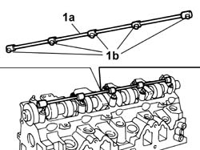
Applies to: engines: 2.0 16V; all production periods
1. Undo the nuts (1a) fixing the camshaft caps in the order indicated and remove the caps (1b).
2. Remove the camshaft.
- Remove the camshaft front oil seal.
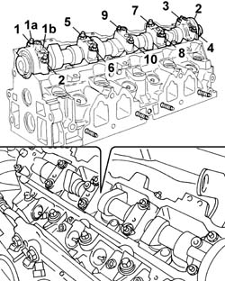
Applies to: engines: 2.0 16V; all production periods
Refitting
Removing1. Fit the camshaft.
2. Fit the camshaft caps (2a) and tighten the nuts (2b) to the recommended torque following the order given.
 | Value - daNm | Fastening | Component | Ø |
|---|---|---|---|---|
2b | 1,6 | Nut | CAMSHAFT CAPS | - |
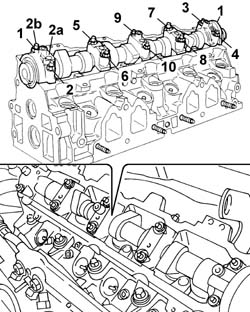
Applies to: engines: 2.0 16V; all production periods
- Press fit the lubrication pipe and the seals.
See in Op. 1036B36
Op. 1032B53 DRIVEN TOOTHED PULLEY (ONE) - R R FOR VERSIONS WITH AIR CONDITIONER
See in Op. 1032B14
See in Op. 1032D12
See in Op. 1092A12
Op. 1092B40 AIR CONDITIONER COMPRESSOR/ALTERNATOR DRIVE BELT - R + R
Op. 1092C11 POWER STEERING PUMP DRIVE BELT - R R FOR VERSIONS WITH AIR CONDITIONER
See in Op. 1016A20
Op. 1048A39 SLEEVE FROM AIR CLEANER TO RIGID PIPE - R R
Op. 5510C10 IGNITION COIL/S - R+R
Op. 7055B54 UNDER-ENGINE GUARD - R R
See in Op. 1088C30
Op. 1048A31 RIGID PIPE CONNECTING AIR CLEANER TO INLET MANIFOLD RIGID PIPE R R
Applies to: engines: 2.0 JTD 8V; all production periods
Removing
RefittingOp. 7055B54 UNDER-ENGINE GUARD - R R
Op. 4450B04 RIGHT FRONT WHEEL R R
Op. 1092G10 SINGLE ENGINE BELT R R
See in Op. 1092A10
See in Op. 1032D12
See in Op. 1032B10
1. Using the tool (1a), undo the bolts fixing the timing drive pulley (1b) and loosen the bolt (1c) fixing the flywheel underneath.
 | Description | Code | Function |
|---|---|---|---|
1a | Counter-torque | 1.860.776.000 | Timing pulley lock |
2. Remove the toothed camshaft pulley
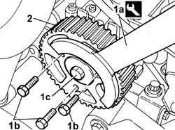
Applies to: engines: 2.0 JTD 8V; all production periods
1. Undo the bolt (1a) loosened previously and remove the flywheel (1b).
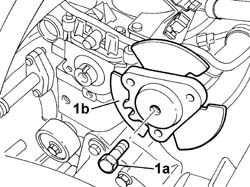
Applies to: engines: 2.0 JTD 8V; all production periods
See in Op. 1048A21
-
Op. 1048B16 PIPES AND/OR ELBOW BETWEEN TURBOCHARGER AND THROTTLE CASING - R.R.
See in Op. 1080C17
-
1. Disconnect the vacuum pipe from the EGR valve.
 | Description | Connector |
|---|---|---|
2 | Heater plugs control unit | M015C |
2. Disconnect the electrical connection for the heater plugs control unit.
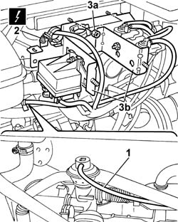
Applies to: engines: 2.0 JTD 8V; all production periods
1. Press the retaining spring (1a) and disconnect the electrical connection (1b) for the engine oil vapour heating resistance.
| Description | Connector |
|---|---|---|
1b | Oil vapour heating resistance | O007A |
2. Disconnect the engine oil vapour pipe from the air intake pipe between the filter and the turbocharger.
3. Remove the oil vapour pipe.
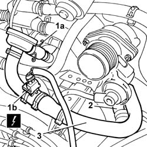
Applies to: engines: 2.0 JTD 8V; all production periods
- Disconnect the electrical connection for the timing sensor.
| Description | Connector |
|---|---|---|
. | Timing sensor | K047 |
1. Disconnect the engine coolant reservoir recirculation pipe.
2. Open the bands (2a) and release the heater water pipe (2b).
3. Disconnect the flexible recirculation pipe from the thermostat.
4. Undo the fixing bolts.
5. Remove the rigid water recirculation pipe.
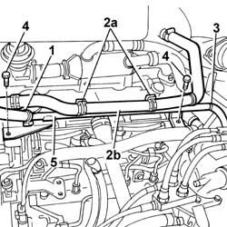
Applies to: engines: 2.0 JTD 8V; all production periods
1. Disconnect the engine oil vapour pipe from the separator.
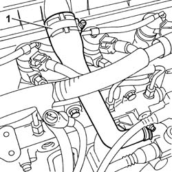
Applies to: engines: 2.0 JTD 8V; all production periods
1. Undo the fixing bolts.
2. Remove the bracket on the pressure pump mounting.
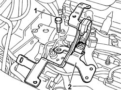
Applies to: engines: 2.0 JTD 8V; all production periods
1. Undo the bolts (1a) and move the bracket (1b) from the housing.
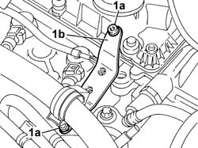
Applies to: engines: 2.0 JTD 8V; all production periods
1. Undo the fixing bolts in the order given below.
2. Remove the tappet cover.
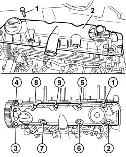
Applies to: engines: 2.0 JTD 8V; all production periods
1. Undo the fixing bolts in the order given below.
2. Remove the camshaft housing.
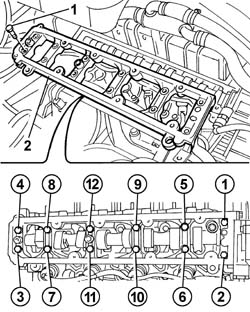
Applies to: engines: 2.0 JTD 8V; all production periods
1. Remove the camshaft (1a) complete with oil seal (1b).
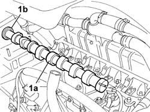
Applies to: engines: 2.0 JTD 8V; all production periods
Refitting
Removing- Fit the camshaft in the housing in the cylinder head.
1. Apply silicon sealant to the camshaft housing fitting surface.
Description | Qty. | Component | Type | Classification | |
|---|---|---|---|---|---|
1 | DOW CORNING, 7091 | - | CYLINDER HEAD EXTENSION | Silicone sealant | - |
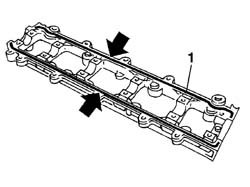
Applies to: engines: 2.0 JTD 8V; all production periods
- Fit the camshaft housing.
- Tighten the twelve bolts to the recommended torque following the order given.
| Value - daNm | Fastening | Component | Ø |
|---|---|---|---|---|
1 | 1,0 | Bolt | CYLINDER HEAD EXTENSION FASTENERS | - |
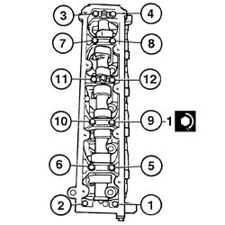
Applies to: engines: 2.0 JTD 8V; all production periods
- Fit the tappet cover in the housing on the cylinder head.
1. Tighten the bolts fixing the tappet cover to torque in the order given.
| Value - daNm | Fastening | Component | Ø |
|---|---|---|---|---|
. | 1,0 | Bolt | CAM COVER | - |
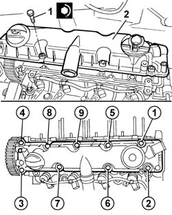
Applies to: engines: 2.0 JTD 8V; all production periods
1. Fit the new oil seal (1b) on the camshaft using the tool (1a).
| Description | Code | Function |
|---|---|---|---|
1a | Fitting tool | 1.860.990.000 | Camshaft front oil seal |
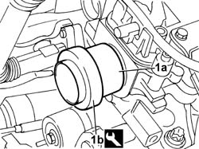
Applies to: engines: 2.0 JTD 8V; all production periods
- Tighten the bolts fixing the thermostat side bracket.
- Fit the bracket on the pressure pump mounting and tighten the fixing bolts.
- Connect the engine oil vapour pipe to the separator.
- Fit the rigid water recirculation pipe and tighten the fixing bolts.
- Connect the flexible recirculation pipe to the thermostat.
- Secure the heater water pipe to the bands on the rigid pipe.
- Connect the engine coolant reservoir recirculation pipe.
- Connect the electrical connection for the timing sensor.
| Description | Connector |
|---|---|---|
. | Timing sensor | K047 |
- Fit the oil vapour pipe.
- Connect the engine oil vapour pipe to the air intake pipe between the filter and the turbocharger.
- Connect the electrical connection for the engine oil vapour heating resistance.
| Description | Connector |
|---|---|---|
. | Oil vapour heating resistance | O007A |
- Fit the bracket, complete with solenoid valves and heater plugs control unit, and tighten the nuts fixing it to the bodyshell.
- Connect the electrical connection for the heater plugs control unit.
| Description | Connector |
|---|---|---|
. | Heater plugs control unit | M015C |
- Connect the vacuum pipe from the EGR valve.
- Fit the power assisted steering fluid reservoir and tighten the fixing bolts to the crossmember.
See in Op. 1080C17
See in Op. 1048A21
Op. 1048B16 PIPES AND/OR ELBOW BETWEEN TURBOCHARGER AND THROTTLE CASING - R.R.
- Fit the flywheel on the camshaft and tighten the fixing bolt.
- Fit the toothed timing drive pulley and screw in the fixing bolts without tightening them.
- Using the tool, stop the rotation of the toothed timing drive pulley and tighten the flywheel fixing bolt to torque.
| Description | Code | Function |
|---|---|---|---|
. | Counter-torque | 1.860.776.000 | Timing pulley lock |
| Value - daNm | Fastening | Component | Ø |
|---|---|---|---|---|
. | 4,3 | Bolt | TIMING PULLEY FLANGE | - |
See in Op. 1032B10
See in Op. 1032D12
See in Op. 1092A10
Op. 1092G10 SINGLE ENGINE BELT R R
Op. 4450B04 RIGHT FRONT WHEEL R R
Op. 7055B54 UNDER-ENGINE GUARD - R R
- Remove the vehicle from the lift.
Applies to: all engines; all production periods
Removing
RefittingSee in Op. 1016A10
See in Op. 1016A20
Op. 4450B04 RIGHT FRONT WHEEL R R
Op. 7055B54 UNDER-ENGINE GUARD - R R
Op. 7055B54 UNDER-ENGINE GUARD - R R
Op. 1092D10 AIR CONDITIONER COMPRESSOR DRIVE BELT - R + R
Op. 1092B51 ALTERNATO/WATER PUMP DRIVE BELT - R+R FOR VERSIONS WITH AIR CONDITIONER
See in Op. 1092A12
See in Op. 1008B10
See in Op. 1032D12
See in Op. 1032B14
Op. 1032B61 TIMING BELT PULLEY - R R
See in Op. 1036B36
1. Undo the fixing nuts (1a) and remove the camshaft caps (1b).
3. Remove the camshaft.
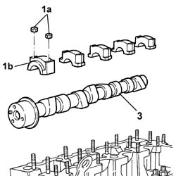
Applies to: all engines; all production periods
Refitting
Removing- Fit the camshaft in the cylinder head.
- Tighten the bolts fixing the caps.
- Tighten the nuts fixing the caps to torque.
| Value - daNm | Fastening | Component | Ø |
|---|---|---|---|---|
1 | 1,8 | Nut | CAMSHAFT CAPS | M8 |
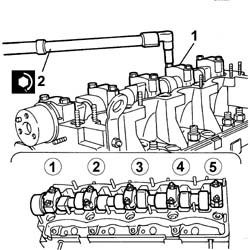
Applies to: all engines; all production periods
See in Op. 1036B36
Op. 1032B61 TIMING BELT PULLEY - R R
See in Op. 1032B14
See in Op. 1032D12
See in Op. 1008B10
See in Op. 1092A12
Op. 1092B51 ALTERNATO/WATER PUMP DRIVE BELT - R+R FOR VERSIONS WITH AIR CONDITIONER
Op. 1092D10 AIR CONDITIONER COMPRESSOR DRIVE BELT - R + R
Op. 7055B54 UNDER-ENGINE GUARD - R R
Op. 7055B54 UNDER-ENGINE GUARD - R R
Op. 4450B04 RIGHT FRONT WHEEL R R
See in Op. 1016A20
See in Op. 1016A10
Topics linked from this page (14)
- 0010T21 COOLANT CHECK DENSITY AND TOP UP IF NECESSARY
- 1032B53 DRIVEN TOOTHED PULLEY (ONE) - R R FOR VERSIONS WITH AIR CONDITIONER
- 1032B61 TIMING BELT PULLEY - R R
- 1048A31 RIGID PIPE CONNECTING AIR CLEANER TO INLET MANIFOLD RIGID PIPE R R
- 1048A39 SLEEVE FROM AIR CLEANER TO RIGID PIPE - R R
- 1048B16 PIPES AND/OR ELBOW BETWEEN TURBOCHARGER AND THROTTLE CASING - R.R.
- 1092B40 AIR CONDITIONER COMPRESSOR/ALTERNATOR DRIVE BELT - R + R
- 1092B51 ALTERNATO/WATER PUMP DRIVE BELT - R+R FOR VERSIONS WITH AIR CONDITIONER
- 1092C11 POWER STEERING PUMP DRIVE BELT - R R FOR VERSIONS WITH AIR CONDITIONER
- 1092D10 AIR CONDITIONER COMPRESSOR DRIVE BELT - R + R
- 1092G10 SINGLE ENGINE BELT R R
- 4450B04 RIGHT FRONT WHEEL R R
- 5510C10 IGNITION COIL/S - R+R
- 7055B54 UNDER-ENGINE GUARD - R R